Lugares
National City é uma cidade à beira-mar. O mapa abre com a tecla M e mostra onde cada pessoa está.
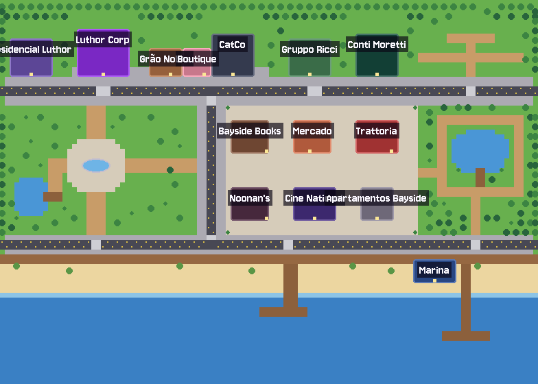
Ao ar livre
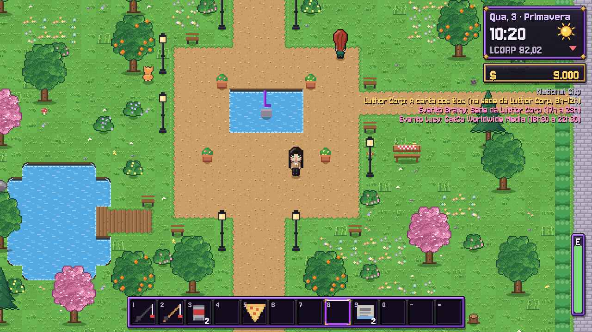
Parque Central
Chafariz, lago para pescar, coletáveis e a Festa das Flores.
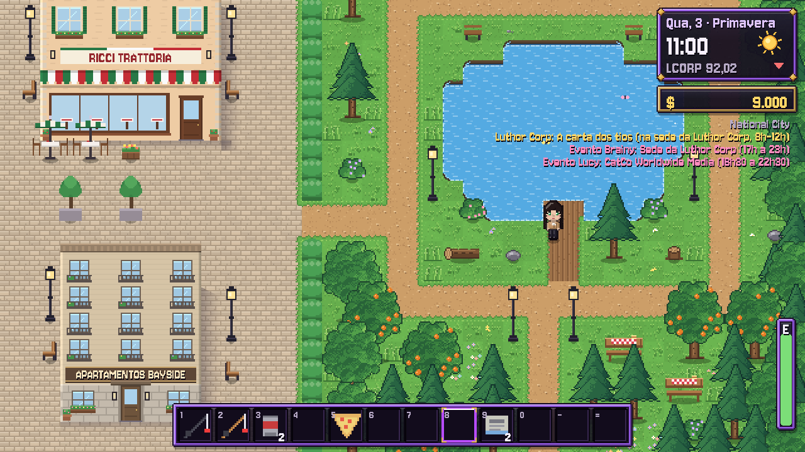
Bosque Bayside
Árvores grandes, pinhas e um lago tranquilo.
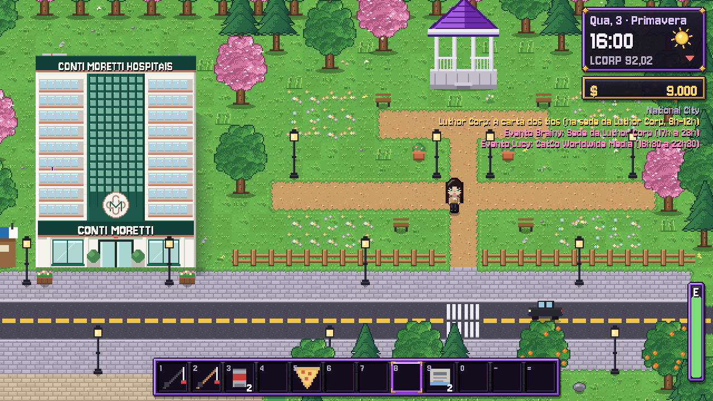
Jardim do Mirante
Jardim no alto da cidade: Noite das Luzes e casamento.
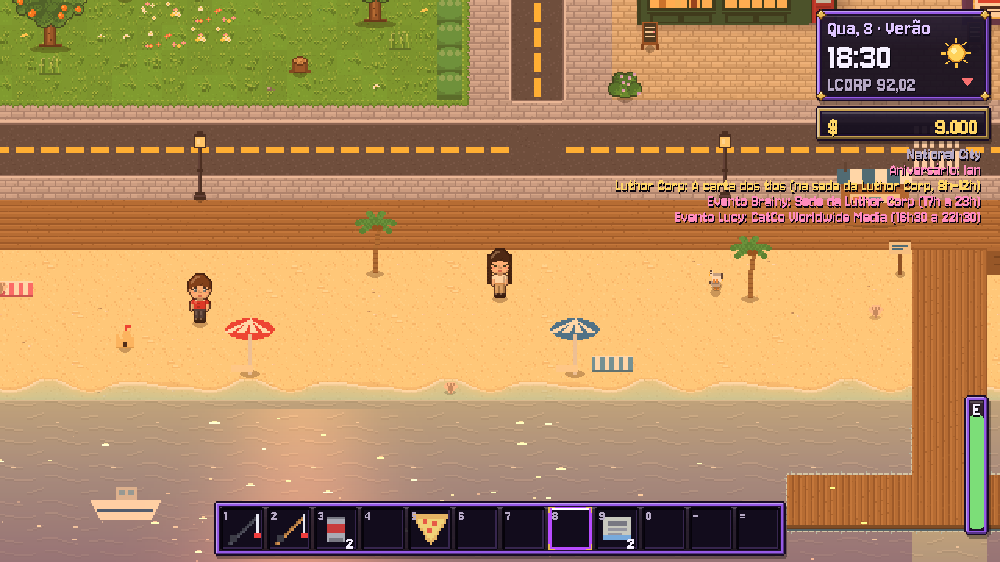
Praia e píer
Mar, conchas, pesca no píer, o Luau e a barraca do Seu Joca.
Prédios
As lojas, os restaurantes e os escritórios têm horário de funcionamento: fora dele a porta fica trancada. Quem comanda o lugar deixa a Letícia entrar a qualquer hora com 2 corações (lojas, cafés e restaurantes) ou 4 corações (CatCo e Gruppo Ricci). Encontros, eventos e visitas marcados ali também abrem a porta. A Luthor Corp, a Marina, o hospital e as casas não fecham.
| Lugar | Horário | Quem libera | Fora do horário |
|---|---|---|---|
| Café Grão Nobre | das 6h às 22h | 2 corações | |
| Mercado Central | das 7h às 20h | 2 corações | |
| Bayside Books | das 8h às 21h | 2 corações | |
| La Boutique | das 9h às 19h | 2 corações | |
| Ricci Trattoria | das 9h às 23h | 2 corações | |
| Noonan's | das 14h às 2h | 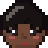 Marco | 2 corações |
| Cine National | das 12h às 2h | — | ninguém |
| CatCo Worldwide Media | das 8h às 20h | 4 corações | |
| Gruppo Ricci | das 9h às 19h | 4 corações |
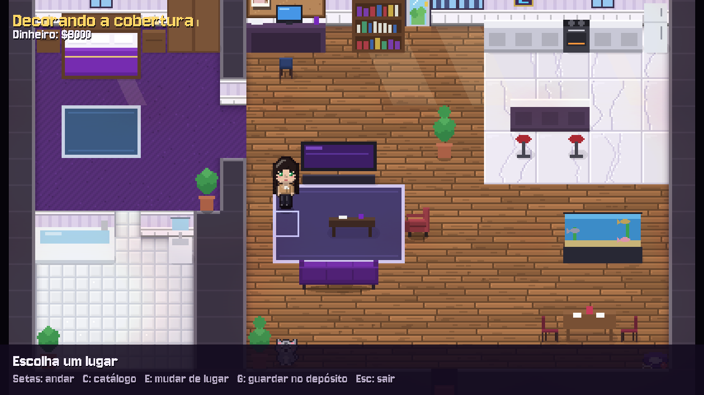
Cobertura Luthor
A casa da Letícia: cama, fogão, aquário, closet, piano, computador (ações e decoração), mural de fotos e a caminha do bichinho. O elevador desce para a portaria do Residencial Luthor.

Terraço
Em cima da cobertura: horta, espreguiçadeira, telescópio e a vista da cidade. Palco da festa surpresa e do pedido de casamento.
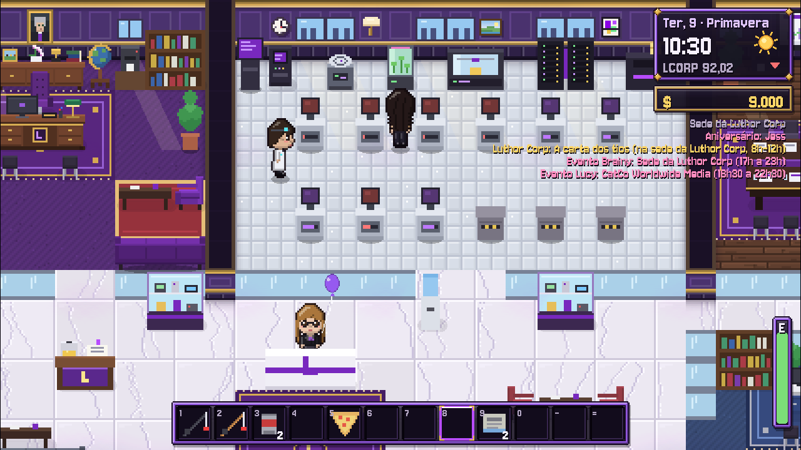


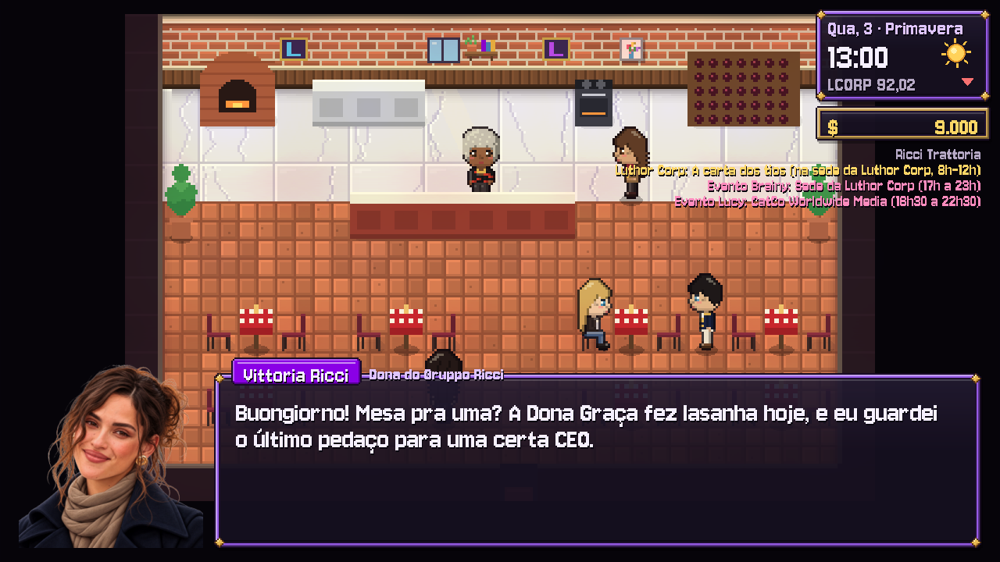
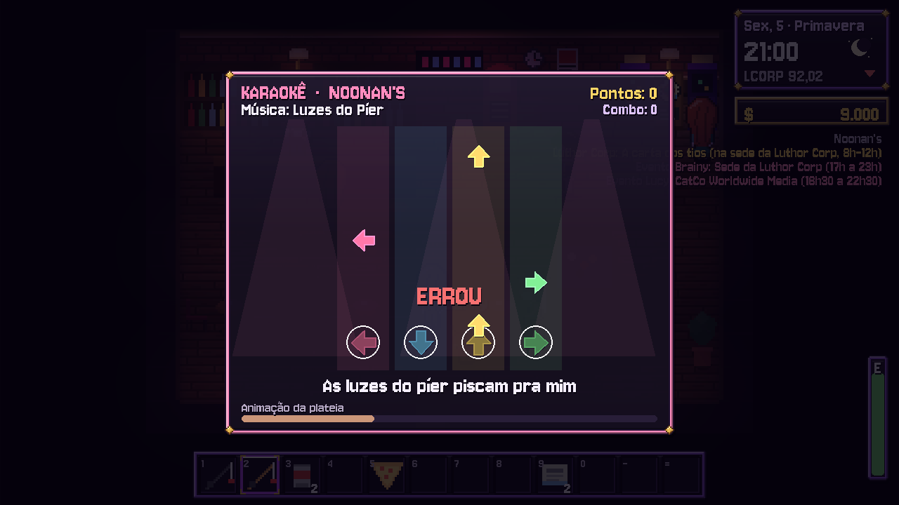
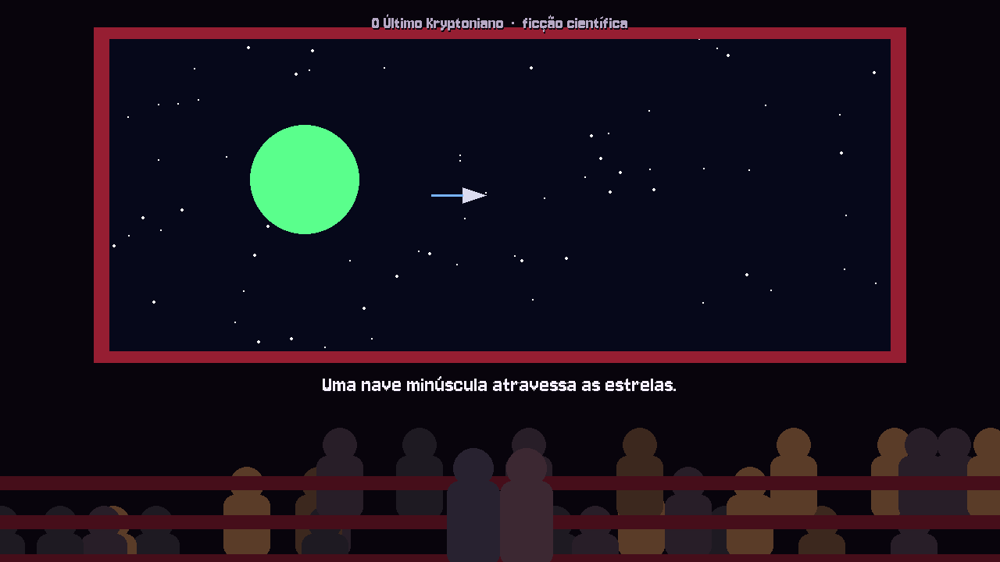
Cine National
Sessões de cinema com pipoca. Ótimo lugar para um encontro.
Horário: das 12h às 2h

Conti Moretti Hospitais
Consultas com bônus do dia, farmácia, brinquedoteca e o leito onde a Letícia acorda quando desmaia.
Horário: sempre aberto
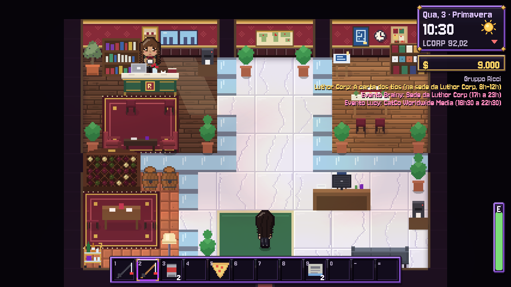
Gruppo Ricci
A sede da rede de restaurantes da Vittoria, com o escritório dela, a sala de projetos e a adega.
Horário: das 9h às 19h
Quem aparece:  Vittoria
Vittoria
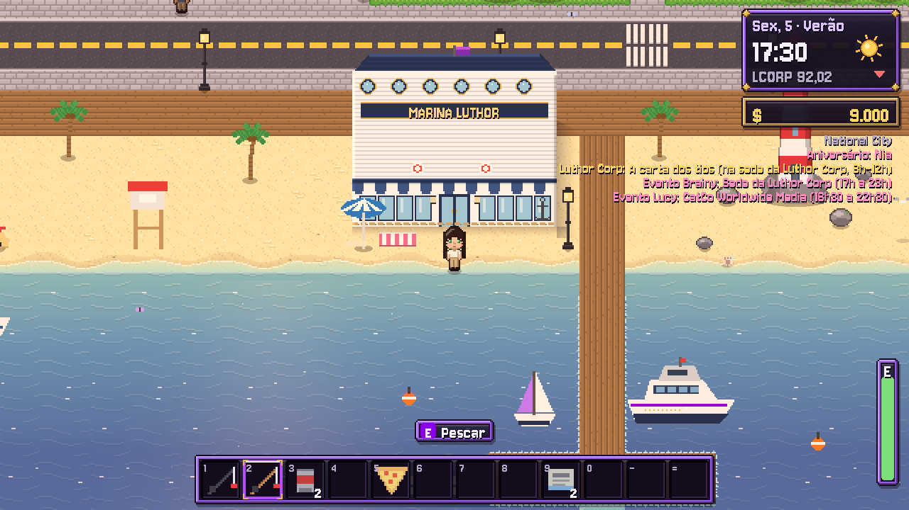
Marina Luthor
A divisão náutica da Luthor Corp, com o Ian. Passeios de barco, regata e encomendas.
Horário: sempre aberto
Quem aparece:  Ian
Ian

Apartamentos Bayside
Portaria (aberta das 7h às 23h) dos apartamentos da Lucy, Vittoria, Brainy, Jess, Nia e Barry. A porta de cada apartamento abre com a pessoa em casa e 2 corações.
Residencial Luthor
Portaria sempre aberta, com os apartamentos da Sam, do Ian e da Milany e o elevador da cobertura.